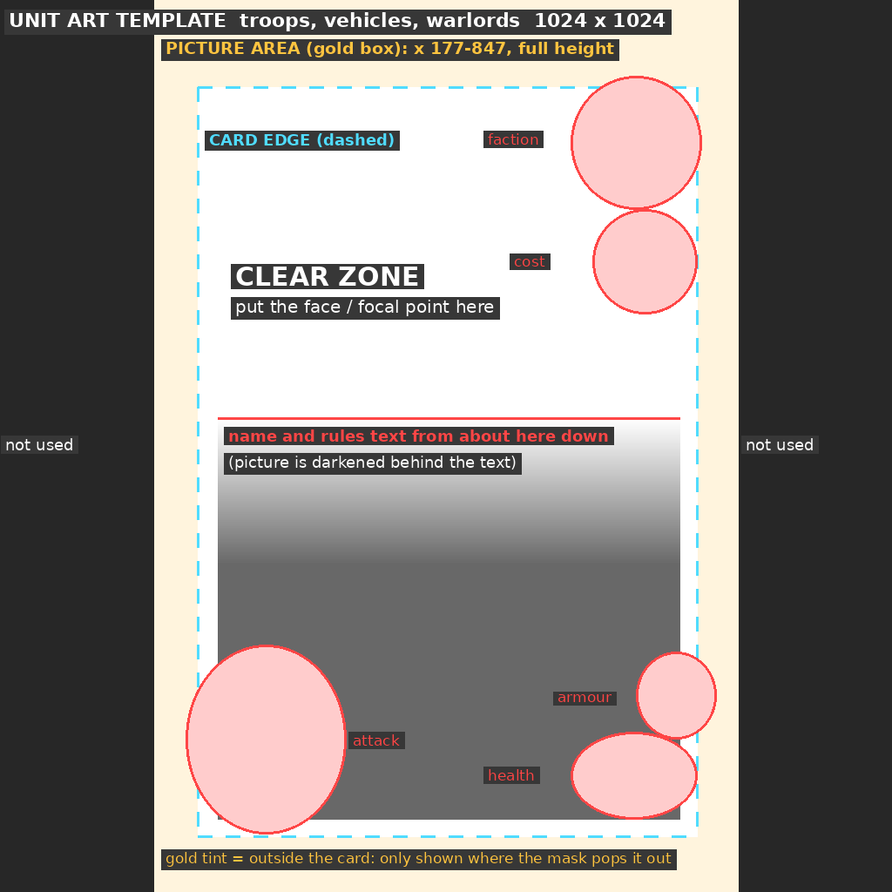
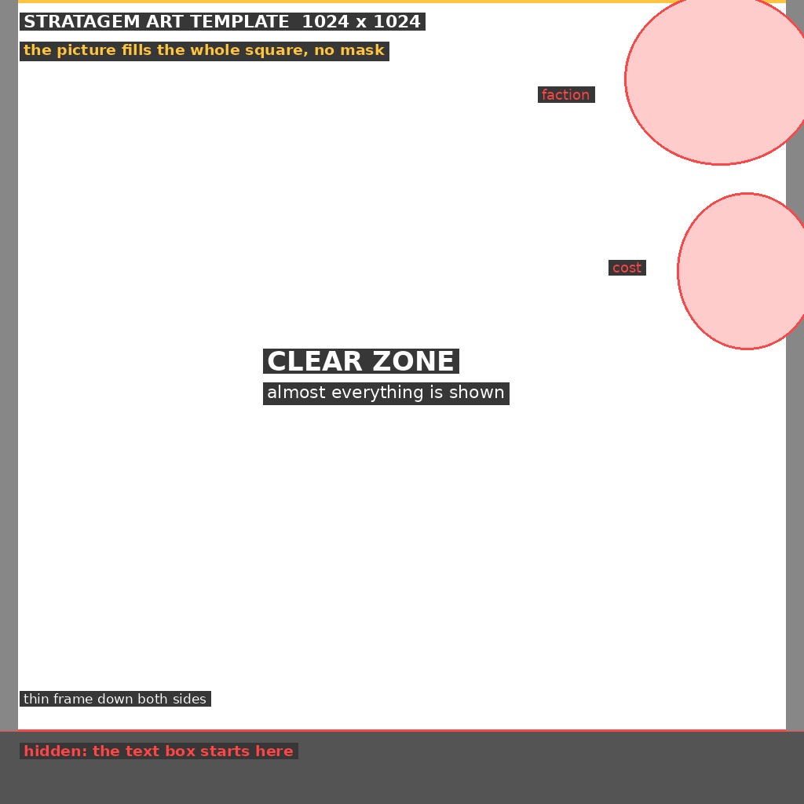

Card artwork guide
How to prepare a picture for a custom Warpforge Revival card. Back to the card creator
The short version
- Every card's art is one 1024 × 1024 picture. Bring any size or shape: the card creator's editor crops and scales it for you.
- Troops, vehicles and warlords use a tall painting, background included, in the middle of that square. It does not need a transparent background.
- Stratagems use the whole square.
- Parts that break out over the card frame (a gun barrel, a banner) are optional and come from a second picture, the pop-out mask.
Downloads
art-kit.zip
art-template-unit.png

art-template-stratagem.png

art-mask-blank.png

The templates are see-through. In your paint program, open a template, put your picture on a layer underneath it, line the picture up, then hide the template layer before you export.
Troops, vehicles and warlords

| Guide | What it means |
|---|---|
| Gold box | The picture area: 670 pixels wide (x 177 to 847), the full 1024 high. Fill all of it. Nothing outside it is used. |
| Dashed line | The edge of the card. The frame covers a thin band just inside it. |
| Clear zone | Shown at full brightness. Put the face or focal point here. |
| Red line | The card's name and rules text can start about here. The picture carries on behind the text but is darkened. Short text starts lower, so the picture should still look good down there. |
| Red circles | Covered by the faction badge, cost, attack values, armour and health. |
| Gold tint | Outside the card. Only seen where the pop-out mask says so. |
The pop-out mask (optional)
Official cards let part of the figure overlap the frame. That is controlled by a second picture of the same size: white where the art should be drawn on top of the frame, black everywhere else. Soft grey edges give a soft blend.
- Start from
art-mask-blank.pngand paint white over the part that should break out. Keep it small: a weapon, a hand, a crest. The official cards pop out one or two details, not the whole figure. - The mask must line up with the picture as saved by the creator. The safe way: place and save the artwork in the creator first, then paint the mask over that saved 1024 × 1024 picture.
- No mask means everything stays neatly inside the frame. That is fine, and it is the default.
Stratagems

| Guide | What it means |
|---|---|
| Gold box | The whole square is the picture. Fill all of it. |
| Clear zone | Nearly everything is shown. |
| Red circles | Top right corner: covered by the faction badge and the cost. |
| Red line | Below it the card's text box begins, so the bottom strip is hidden. |
Stratagems have no pop-out mask.
Picture quality
- PNG, JPG or WebP, up to 20 MB. The creator saves it as a 1024 × 1024 PNG.
- For units aim for at least 670 × 1024; for stratagems at least 1024 × 1024. Smaller pictures are enlarged and look soft.
- Unit pictures are portrait (about 2 : 3). A landscape picture will be cropped hard at the sides.
- Only upload artwork you made or have the right to use, and follow the card creator rules.
Uploading
- In the card creator, fill in the card, then choose …or upload your own artwork.
- Drag and zoom the picture under the guides (the same guides as the templates), then Use this artwork.
- For a unit, optionally choose Add a pop-out mask and pick your mask picture.
Example: official cards
Four official cards, showing the picture in the art file, the pop-out mask stored with it, and the finished card.

Measurements were taken by lining official art up against finished official cards. Example artwork belongs to its owners and is shown for reference only.